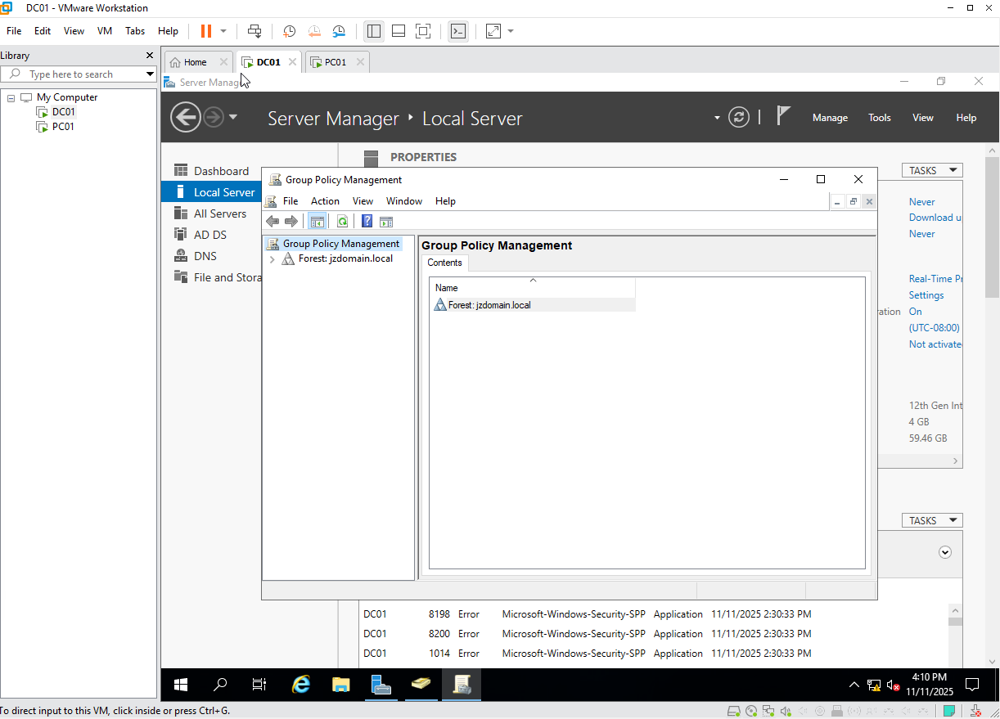
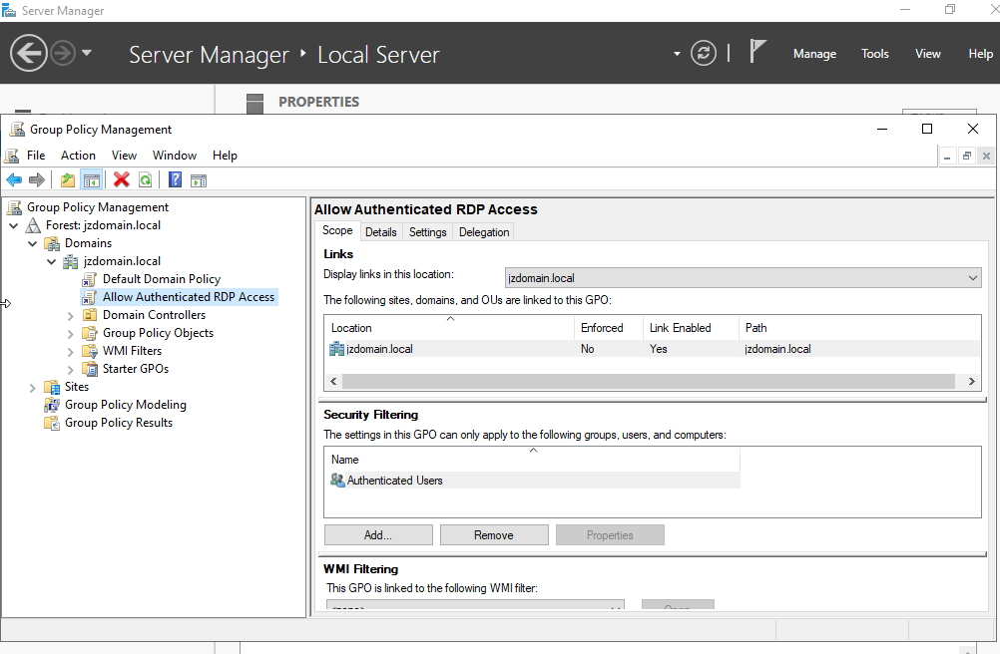
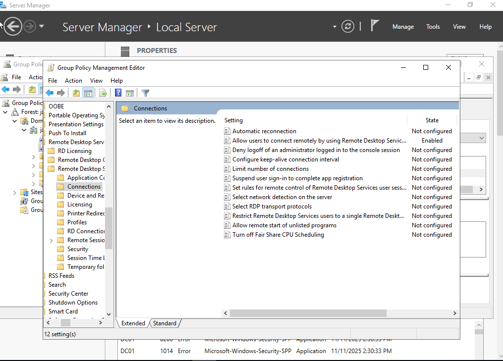
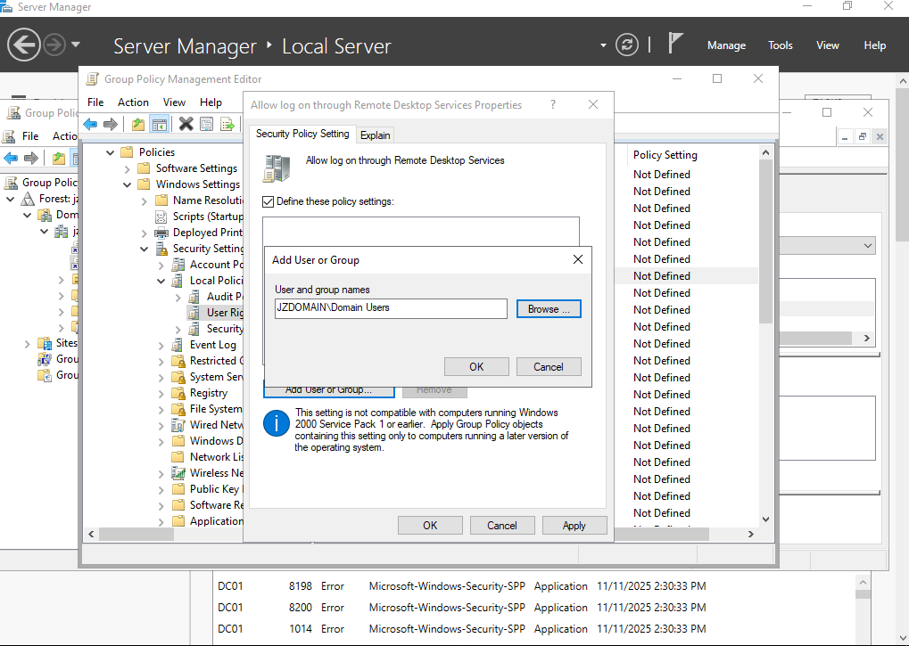
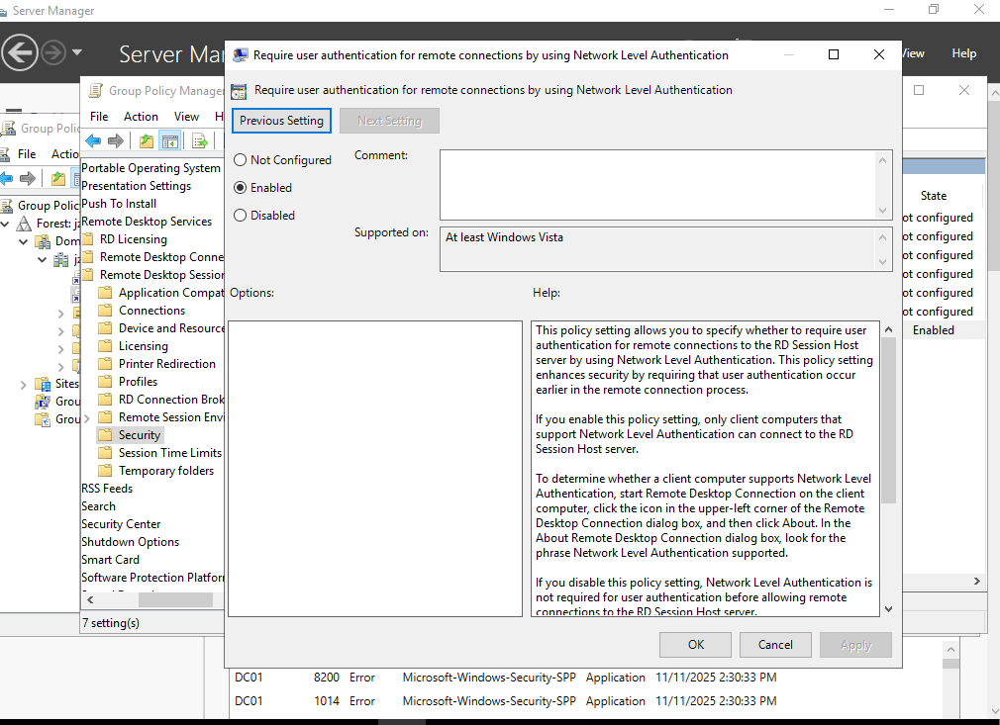
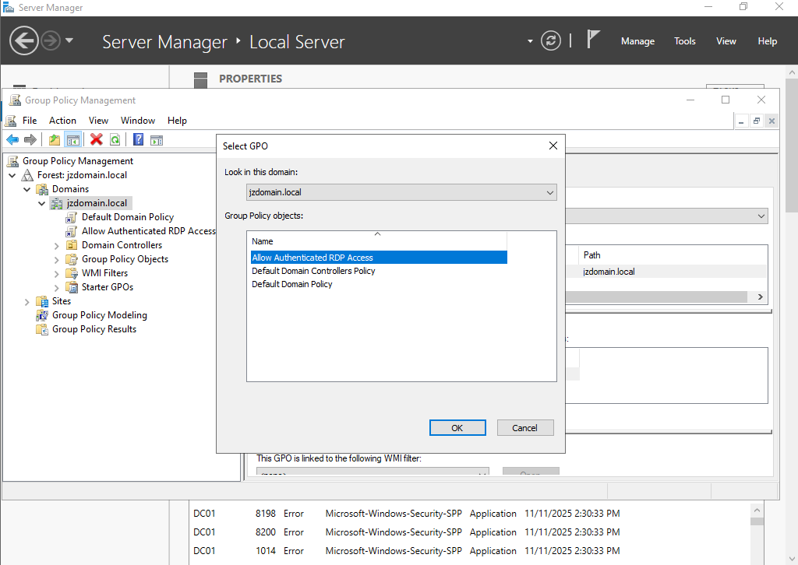
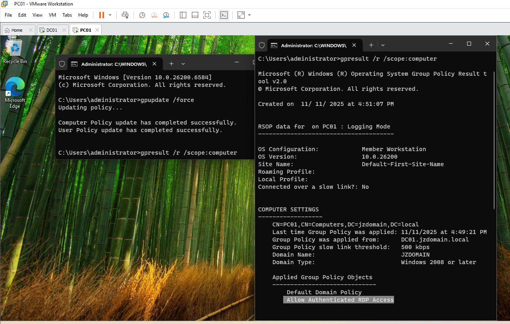

This project shows how I configured a Group Policy Object (GPO) to enable Remote Desktop Protocol (RDP) only for authenticated domain users and devices. The goal is to allow remote management while keeping access limited to trusted accounts inside the domain.
Enable RDP across domain-joined computers while restricting access so only authenticated users and approved domain devices can connect.
I started by opening the Group Policy Management Console (GPMC) on the Domain Controller. This is where domain-wide GPOs are created and managed.

I created a new GPO with a clear name describing its purpose (for example, Remote Desktop Access GPO), and scoped it for the domain computers that should allow Remote Desktop.
Creating a dedicated GPO keeps the RDP configuration centralized and easy to maintain.

Within the GPO, I enabled Remote Desktop so that any computer receiving this policy will have RDP turned on automatically. Configuring it through Group Policy ensures a consistent setup on every domain-joined machine instead of relying on local manual changes.

I restricted RDP access to authenticated domain users and, if needed, specific security groups. This prevents unknown or non-domain accounts from connecting, limiting remote access to trusted identities and devices joined to the domain.

I enabled Network Level Authentication (NLA) to add an extra layer of security. With NLA, users must authenticate before a full Remote Desktop session is created, which reduces the attack surface and helps protect the system from unauthorized connection attempts.

I linked the GPO at the domain or OU level so it applies to the correct set of computers (desktops, laptops, and servers) that should allow RDP access.

On a domain-joined computer, I forced a Group Policy refresh so the new RDP settings would apply immediately instead of waiting for the normal background update cycle:
gpupdate /force
After the update completed, I tested RDP access and confirmed that only authenticated domain accounts could successfully connect.

This GPO standardizes Remote Desktop configuration across the domain and secures it by: